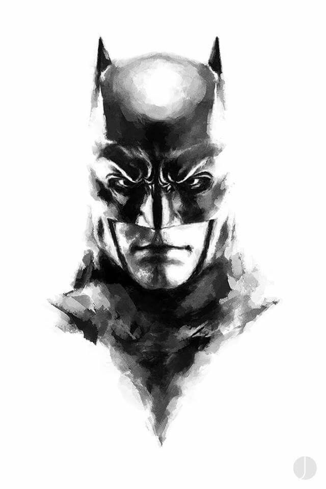

Because I am Batman
Batman operates in the fictional Gotham City with assistance from various supporting characters, including his butler Alfred, police commissioner Gordon, and vigilante allies such as Robin. Unlike most superheroes, Batman does not possess any superpowers; rather, he relies on his genius intellect, physical prowess, martial arts abilities, detective skills, science and technology, vast wealth, intimidation, and indomitable will. A large assortment of villains make up Batman's rogues gallery, including his archenemy, the Joker.

Because Batman never skips leg day
Batman operates in the fictional Gotham City with assistance from various supporting characters, including his butler Alfred, police commissioner Gordon, and vigilante allies such as Robin. Unlike most superheroes, Batman does not possess any superpowers; rather, he relies on his genius intellect, physical prowess, martial arts abilities, detective skills, science and technology, vast wealth, intimidation, and indomitable will. A large assortment of villains make up Batman's rogues gallery, including his archenemy, the Joker.

The One Man War On Crime
Although Batman now has a family of sorts comprised of Robin, Red Robin and Nightwing, among others, his origin as a one-man war on crime is perhaps one of the most endearing aspects of his character. If you've ever been a victim of a criminal, then you'll be familiar with the sense of rageful injustice that comes hand in hand. Bruce Wayne, as early as 8 years old, had suffered this injustice to such an extreme that he chose to arm himself with every weapon possible and suit up to take back the streets, one lowlife at a time.
The Bat Cave
It houses literally the entire Bat-legacy: from Batsuits to Batmobiles, as well as trophies of victory and oh, who could forget, a giant T-Rex statue. In fact the Batcave is conceptually similar to Bruce Wayne himself in many ways; where there once was a dark, endless void deep beneath the surface, now resides the Batman. There are plenty of physical and metaphorical barriers that he passes around himself and his secret identity, but the Batcave is by far the most awesome.